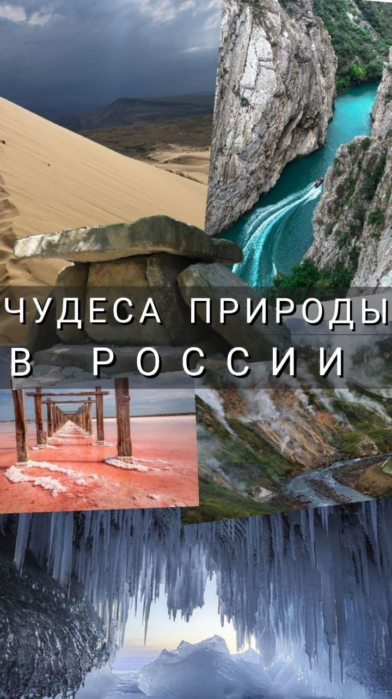
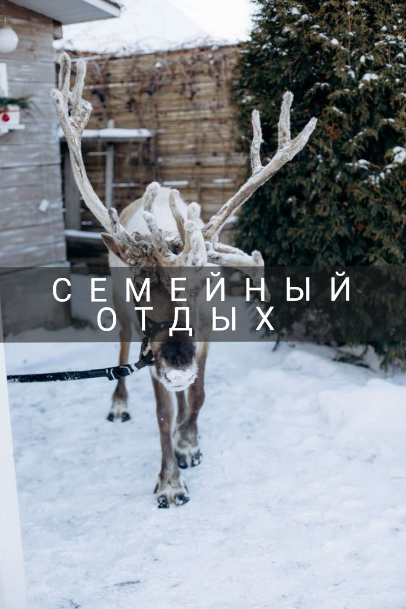
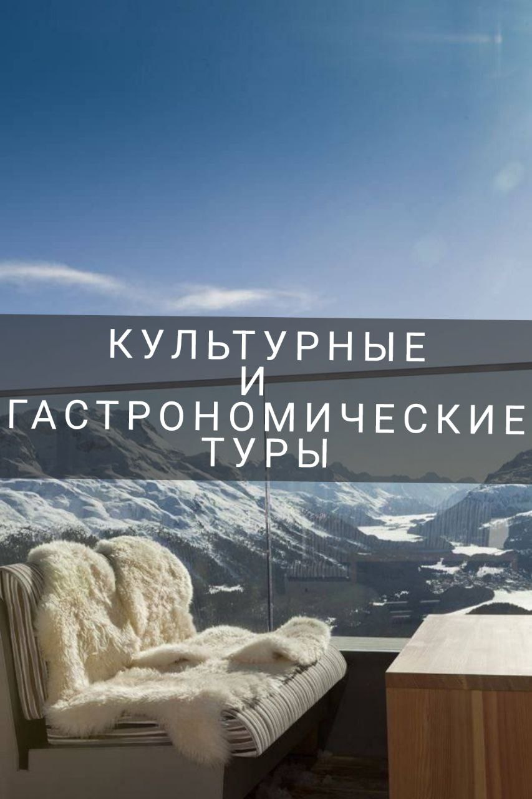
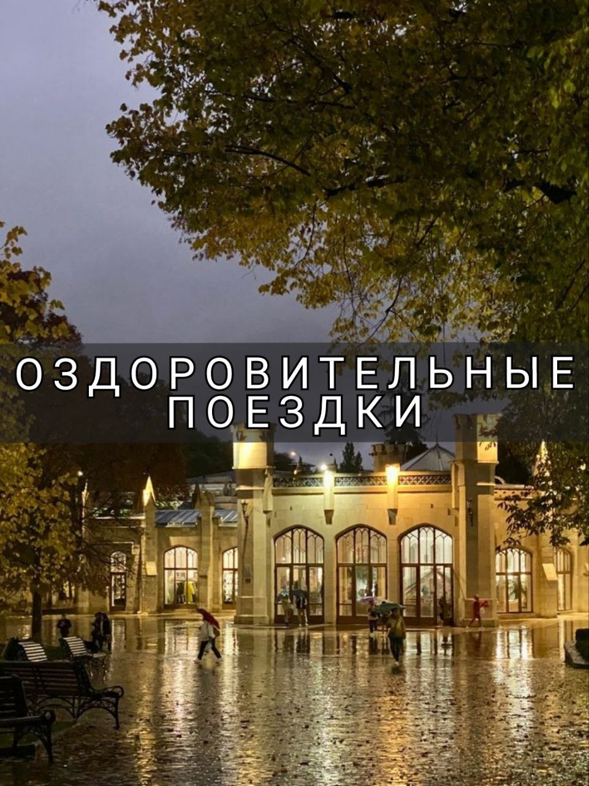
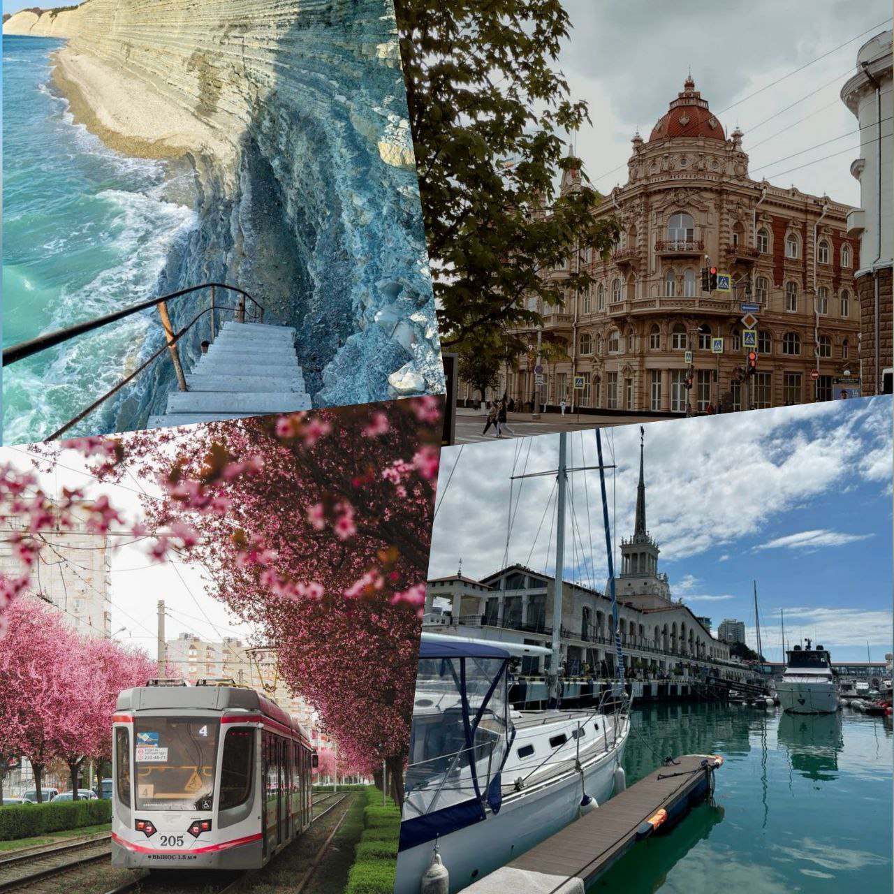
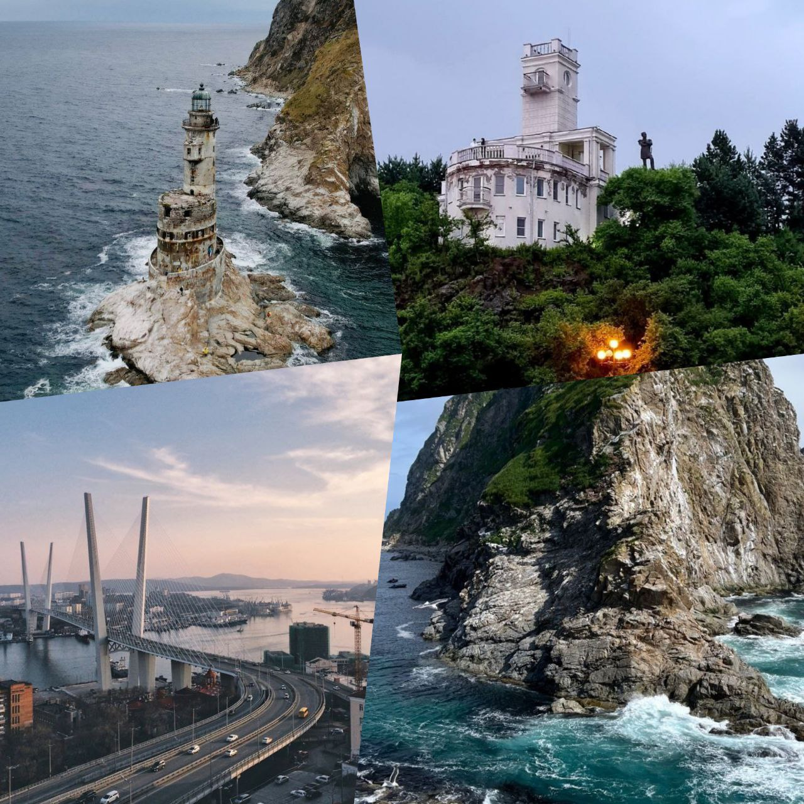
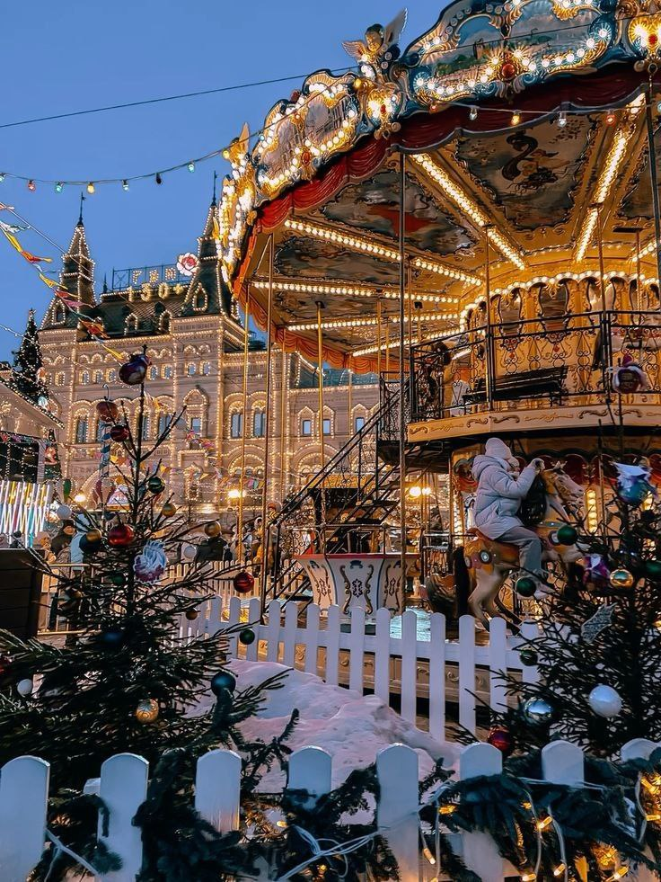

Добро пожаловать в мир туризма!
О нас
Если вы любите путешествовать, то наш сайт вам точно поможет узнать Россию с туристической стороны.
Виды туризма
-

По достопримечательностям
Добро пожаловать в увлекательный мир российских достопримечательностей!
Мамаева кургана в Волгограде. Этот величественный мемориал посвящен героям Сталинградской битвы и славен своей грандиозной статуей «Родина-мать». Прогулка по кургану дарит не только впечатляющие виды на город, но и глубокое погружение в историю. Перемещаемся в Санкт-Петербург, где расположился Эрмитаж – один из крупнейших художественных музеев мира. Его роскошные залы содержат коллекции от античности до современного искусства, а великолепие архитектуры Дворца Екатерины восхищает своей изысканностью. Прогуливаясь по этому культурному сокровищу, вы окажетесь в сердце искусства и истории. Кремль в Москве – еще одно сердце нашей страны. Это не только резиденция президента, но и настоящая крепость с впечатляющими соборами и знаменитыми курантами на Спасской башне. Прогулка по его территории позволит вам окунуться в атмосферу древнерусского зодчества и богатой истории. И, наконец, Екатерининский дворец в Царском Селе – жемчужина барокко. Его великолепные залы и знаменитая Янтарная комната поражают воображение и заставляют затаить дыхание. Здесь можно ощутить атмосферу императорской России и насладиться красотой парков и садов, окружающих дворец. Каждая из этих достопримечательностей рассказывает свою уникальную историю, и все они ждут вас, чтобы открыть свои двери и подарить незабываемые впечатления!
-

По чудесам природы
Путешествуйте по чудесам природы России и откройте для себя уникальные уголки, которые оставят вас в полном восторге!
Байкал, самое глубокое пресноводное озеро на планете, впечатляет своей кристально чистой водой и великолепными пейзажами. Насладитесь живописными прогулками по берегам и удивитесь разнообразию его флоры и фауны. Бархат Сарыкум – загадочный бархан, где мягкие песчаные дюны сменяются зелеными оазисами. Ваши глаза засияют от красоты этой местности, а шум ветра в бархане создаст атмосферу сказки. Долина Гейзеров – одно из немногих мест на Земле, где можно увидеть бурлящие природные источники. Это захватывающее зрелище не оставит равнодушным ни одного путешественника и позволит вам прикоснуться к необыкновенной силе природы. Эльтон – соленое озеро, знаменитое своими целебными грязями и фантастическими закатами. Откройте для себя эти чудеса и воспользуйтесь возможностью оздоровления в самом сердце природы. Сулакский каньон — один из самых глубоких каньонов Европы, который поражает своими величественными скалами и яркой бирюзовой водой. Прогулки по его кромке подарят незабываемые эмоции и возможность сделать потрясающие фотографии. Собирайте чемоданы и отправляйтесь к источникам вдохновения и красоты!
-

Семейный отдых
Приглашаем вас в увлекательное путешествие к резиденции Деда Мороза!
Окунитесь в атмосферу зимней сказки и волшебства, где оживают новогодние традиции. В этом необычном месте вы сможете познакомиться с самим Дедом Морозом и его верной помощницей Снегурочкой, посетить уютные мастерские, где создаются подарки для детей, и принять участие в увлекательных мастер-классах. Не упустите возможность прогуляться по сказочным зимним пейзажам, насладиться снежными забавами и посетить ярмарку, где можно приобрести необычные сувениры и лакомства. Сюда можно приехать всей семьей и окунуться в мир сказки, радости и волшебства. Подарите себе и своим близким незабываемые моменты среди зимней сказки!
-

Экотуризм
Байкал — одно из величайших природных чудес мира, приглашает вас в захватывающие эко туры, обещающие уникальные приключения и погружение в дикие красоты.
Это удивительное озеро, охраняемое ЮНЕСКО, поражает своей кристально чистой водой и живописными пейзажами. Исследуйте уединенные пляжи, величественные скалы и удивительные подводные ландшафты. Во время тура у вас будет возможность увидеть уникальные виды местной флоры и фауны, включая нерпу и омуль. Прогулки по живописным экотропам подарят вам потрясающие виды на горные хребты и леса, а также фотомоменты, которые останутся с вами навсегда. Посетите бурятские поселения, где вас встретят традиции и кулинарные деликатесы местной культуры. Экологические туры на Байкале — это не только возможность насладиться природой, но и внести вклад в ее сохранение. Приезжайте и откройте для себя магию этого уникального уголка планеты!
-

Культурные и гастрономические туры
Отправьтесь в уникальное путешествие на Новый год в Осетию, где традиции встречают современные праздники!
Вас ждёт незабываемая атмосфера горного края, захватывающие зимние пейзажи и уникальная культура. В программе тура – встречи с местными жителями, которые поделятся своими осетинскими обычаями и кулинарными секретами. Традиционные новогодние блюда и мастер-классы подарят вам море эмоций и впечатлений . Тур включает в себя экскурсии по историческим местам и живописным уголкам Осетии, где каждая деталь погрузит вас в волшебство зимы. Создайте незабываемые воспоминания о праздниках в уникальной обстановке гор, где сбываются мечты, и дух веселья витает в воздухе!
-

Оздоровительные поездки
Приглашаем вас в тур "Целебные воды Кавказа", где природа дарит здоровье и радость!
Откройте для себя уникальные минеральные источники, знаменитые на весь мир своими целебными свойствами. Вас ждёт расслабляющий отдых в современных курортах и спа-салонах, где вы сможете насладиться процедурами на основе природных вод. В программе тура – увлекательные экскурсии по живописным уголкам Кавказа, знакомство с местной культурой и традициями, а также возможность попробовать вкуснейшие блюда национальной кухни. Погрузитесь в атмосферу гармонии и оздоровления, вдохните чистый горный воздух и насладитесь великолепными пейзажами. Подарите себе здоровье и новые впечатления с туром "Целебные воды Кавказа"!
Популярные направления
-

Северо-Запад
Отправьтесь в увлекательное путешествие по северо-западу России, где исторические города соседствуют с нетронутой природой!
В рамках тура вы посетите величественные Псков и Новгород, насладитесь архитектурными шедеврами и обширными историческими памятниками, а также погрузитесь в атмосферу древней Руси. Затем отправляйтесь на красивейшие озёра и леса, где ощущается единство с природой. Вас ждут живописные пейзажи, возможность увидеть редкие виды флоры и фауны и активные виды отдыха – от пеших прогулок до лодочных экскурсий. Погрузитесь в культуру региона через местные ремесла, традиционные праздники и дегустацию деликатесов, которые оставят незабываемые впечатления. Этот тур — идеальное сочетание истории, природы и культуры, готовое подарить вам новые открытия и вдохновение!
-

Центральный
Приглашаем вас в захватывающее путешествие по центральной части России – настоящему сердцу страны, где переплетаются история, культура и потрясающие природные пейзажи!
В нашем туре вы посетите выдающиеся города, такие как Москва и Ярославль, где сможете восхититься величественными соборами, уникальной архитектурой и богатым культурным наследием. Прогулки по уютным улочкам, посещение музеев и театров, а также национальная кухня сделают ваше путешествие незабываемым. Вы также сможете насладиться живописными видами на Волгу и старинные усадьбы, погрузившись в атмосферу провинциальной России. Этот тур идеален как для любителей истории, так и для ценителей природы, ведь центральная часть России предлагает удивительное разнообразие впечатлений. Откройте для себя культуру и традиции, которые формировали страну на протяжении веков, и создайте свои незабываемые воспоминания!
-

Южный
Добро пожаловать в уникальное путешествие по южной части России – краю яркого солнца, дикой природы и многообразной культуры!
Вас ждёт захватывающий тур, охватывающий уютные курорты Черноморского побережья, исторические города, такие как Сочи и Краснодар, а также потрясающие природные заповедники. Исследуйте золотые пляжи, наслаждайтесь свежими морепродуктами и окунитесь в яркую атмосферу южного отдыха. Вы сможете посетить величественные Кавказские горы, отправиться в захватывающие треккинги и насладиться всеми красотами местной флоры и фауны. Этот тур подарит вам возможность узнать местные традиции, погружаясь в уникальную культуру и аутентичную кухню региона. Присоединяйтесь к нам и откройте для себя южную Россию – место, где природа встречается с историей, а солнце светит круглый год!
-

Урал
Откройте для себя магию Урала – удивительного региона России, где сливаются великолепные горы, уникальная природа и богатое культурное наследие.
В нашем туре по Уралу вас ждёт захватывающее путешествие через живописные ландшафты, включая величественные горные хребты, кристально чистые реки и живописные озера. Посетите уникальные города, такие как Екатеринбург и Челябинск, погружаясь в атмосферу исторических событий и местных традиций. Насладитесь активными приключениями: треккингом, сплавами по рекам и киносемейной зимой на горнолыжных курортах. Урал – это не только природные красоты, но и уникальное сочетание культуры и искусства. Откройте для себя традиции коренных народов, попробуйте местную кухню и насладитесь теплотой уральского гостеприимства. Присоединяйтесь к нам, чтобы увидеть всё это своими глазами и создать незабываемые воспоминания!
-

Сибирь
Погрузитесь в захватывающее приключение по невероятной Сибири – самой загадочной и мистической части России!
Этот тур обещает вам незабываемые впечатления, от величественных просторов тайги до кристально чистых озёр и уникальных природных заповедников. Откройте для себя величественное озеро Байкал – самое глубокое в мире, и насладитесь удивительными пейзажами, которые смогут очаровать даже самых искушённых путешественников. У вас будет возможность познакомиться с богатым культурным наследием Сибири и её народами: от древних традиций бурят до уникальной архитектуры сибирских городов, таких как Иркутск и Новосибирск. Проведите время на свежем воздухе, участвуя в треккинге, рыбалке и экотуризме, исследуя живописные горы и уединённые уголки природы. Не упустите шанс ощутить дух сибирского гостеприимства, попробовать местную кухню и создать незабываемые воспоминания в этом волшебном краю. Присоединяйтесь к нашему туру по Сибири и откройте для себя мир удивительных открытий и вдохновения!
-

Дальний-Восток
Покорите Дальний Восток России – регион, где дикая природа встречается с богатым культурным наследием! Этот тур предлагает уникальную возможность увидеть потрясающие пейзажи, от величественных вулканов Камчатки до живописных побережий Приморья.
Исследуйте заповедные территории, такие как Курильские острова и национальные парки, обитатели которых включают редкие виды животных и птиц. Здесь вы сможете встретиться с культурой коренных народов, попробовать вкуснейшие морепродукты и насладиться традиционными угощениями. Присоединяйтесь к приключениям на природе: от активного отдыха с рафтингом и треккингом до спокойных дней на берегу океана, наслаждаясь живописными закатами. Дальний Восток – это место, где каждый найдет для себя что-то удивительное. Откройте для себя красоту и тайны этого уникального региона и создайте незабываемые воспоминания о вашем путешествии под небом Дальнего Востока!
-

Кавказ
Добро пожаловать на Кавказ – регион, насыщенный величественными горами, чистейшими реками и уникальной культурой!
Наш тур по Кавказу предлагает вам возможность насладиться захватывающими пейзажами Эльбруса, ощутить дух древних традиций и попробовать вкуснейшую кухню. Исследуйте живописные долины, исторические крепости и старинные минеральные источники. Вы сможете активно провести время, участвуя в треккинге по горным маршрутам, катании на лошадях и купании в термальных источниках. Погрузитесь в разнообразие культуры регионов, познакомьтесь с гостеприимством местных жителей и узнайте об их уникальных традициях. Кавказ ждет вас с открытыми объятиями и удивительными приключениями, которые не оставят вас равнодушными. Откройте для себя этот волшебный уголок России и создайте незабываемые впечатления!
Исследуйте по-другому
-

Новый год в Москве
Погрузитесь в волшебство зимней столицы с туром "Новый год в Москве"!
Вас ждёт незабываемое новогоднее приключение, полное ярких огней, праздничных украшений и уникальной атмосферы. Исследуйте сказочные рождественские ярмарки, наслаждайтесь катанием на коньках и восхитительными угощениями. Прогуляйтесь по историческим улицам, утопающим в огнях, и посетите знаменитые достопримечательности, такие как Красная площадь и Кремль, которые в новогодние праздники особенно красивы. Не упустите шанс встретить Новый год на главной площади страны с фейерверками и живой музыкой. С этим туром каждый момент станет заполненным радостью и волшебством, а воспоминания о празднике в Москве останутся с вами на всю жизнь! Присоединяйтесь и откройте для себя новогоднюю сказку в сердце России!
-

Автотуризм
Откройте для себя бескрайние просторы России с уникальными автотурами!
Путешествуйте по живописным маршрутам, наслаждаясь свободой исследовать великолепие природы и культурное богатство нашей страны в любом темпе. Эти автотуристические маршруты предлагают массу впечатляющих направлений. Проедьте по Золотому кольцу, откройте для себя древние города, такие как Сергиев Посад и Суздаль, и погрузитесь в атмосферу русской истории. Вы можете отправиться на Камчатку, насладившись поразительными вулканами и дикой природой, или же проехать по берегу Байкала, захватывая чарующие пейзажи и скрытые уголки. Позвольте себе приключение на колесах и создайте незабываемые воспоминания, открывая уникальные уголки России!
-

Круиз
Исследуйте необъятные просторы России с захватывающим круизом!
Погружаясь в уникальную атмосферу, вы сможете насладиться величественными реками, живописными берегами и историческими городами. Маршруты охватывают самые интересные направления. Присоединяйтесь к круизу по Волге, где вас ждут древние города, такие как Ярославль и Кострома, с их богатой историей и культурой. Откройте для себя потрясающие виды на Байкале — одном из самых глубоких и чистых озёр мира, где вы сможете расслабиться и насладиться красотой природы. Также предложены круизы по Неве, которые позволят вам увидеть Санкт-Петербург с воды, восхищаясь его великолепной архитектурой и знаковыми памятниками. В каждом маршруте вы сможете найти уникальные программы с экскурсиями, мастер-классами и увлекательными вечерними развлекательными мероприятиями. Подарите себе незабываемый гастрономический и культурный опыт, отправившись в круиз по России — это путешествие, которое останется в вашем сердце навсегда!